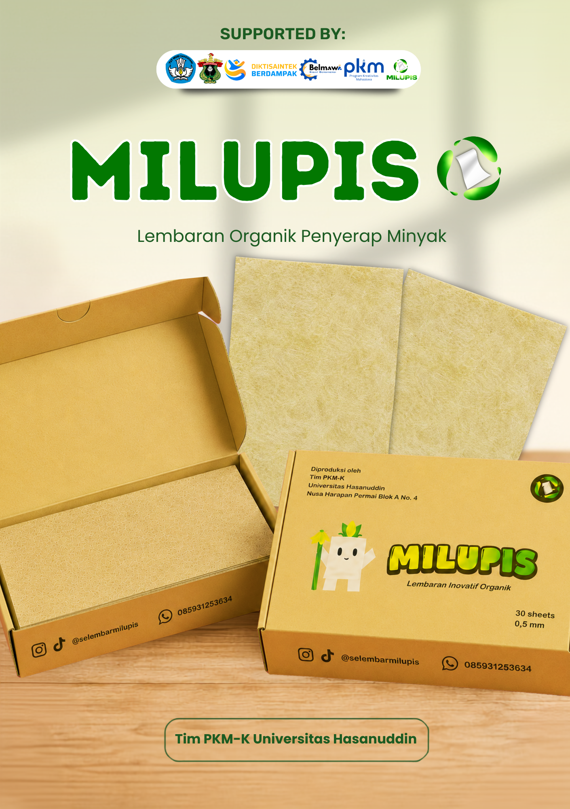
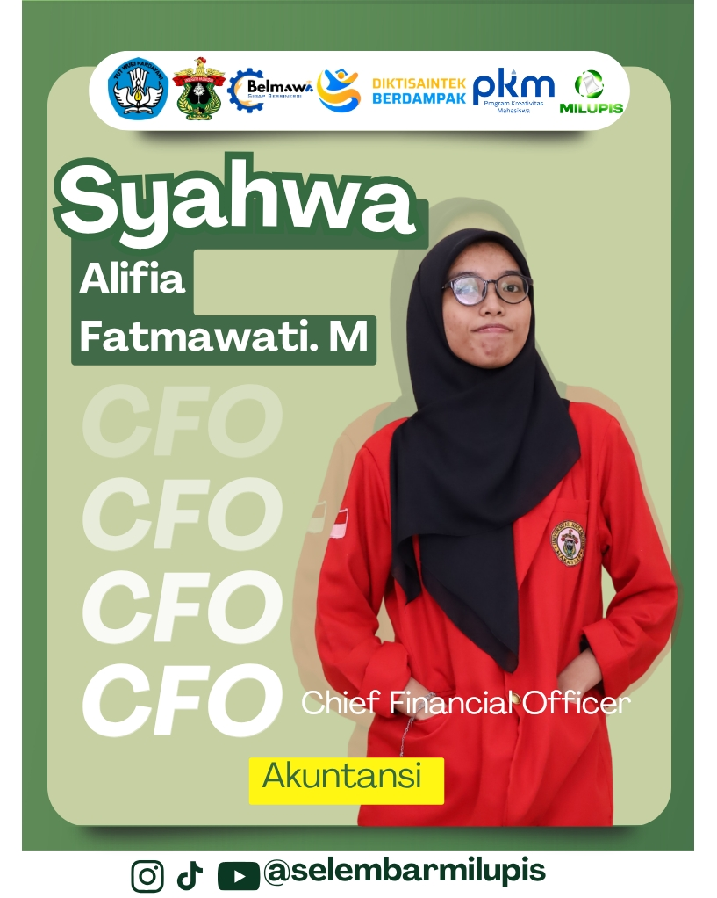
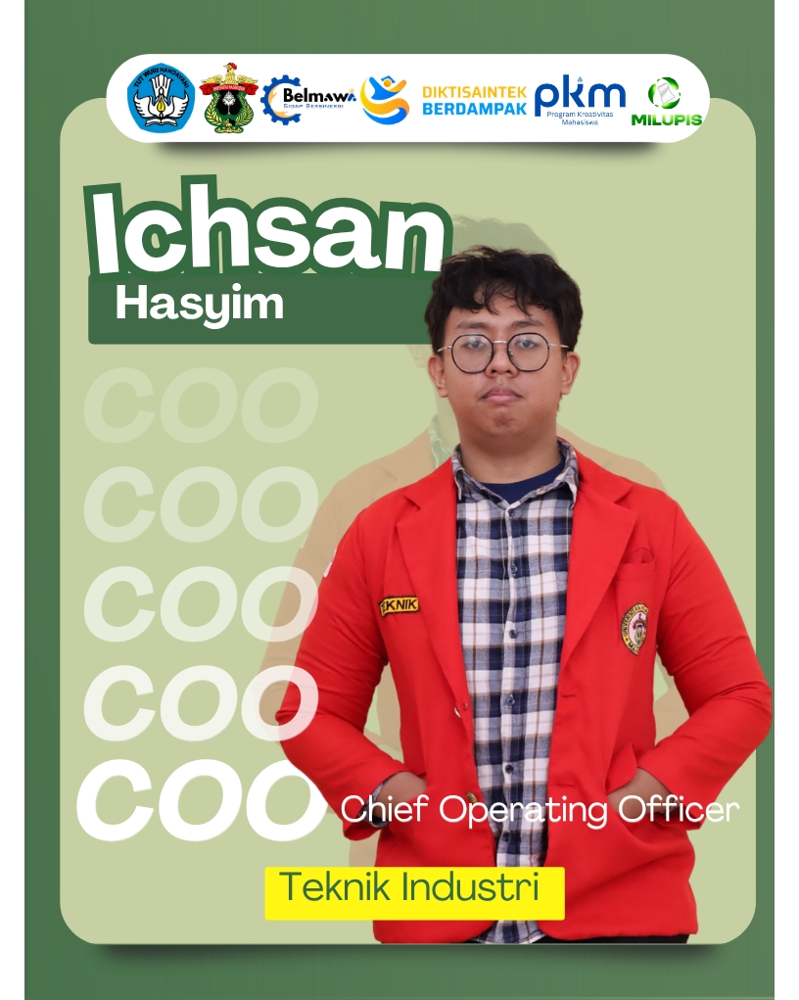
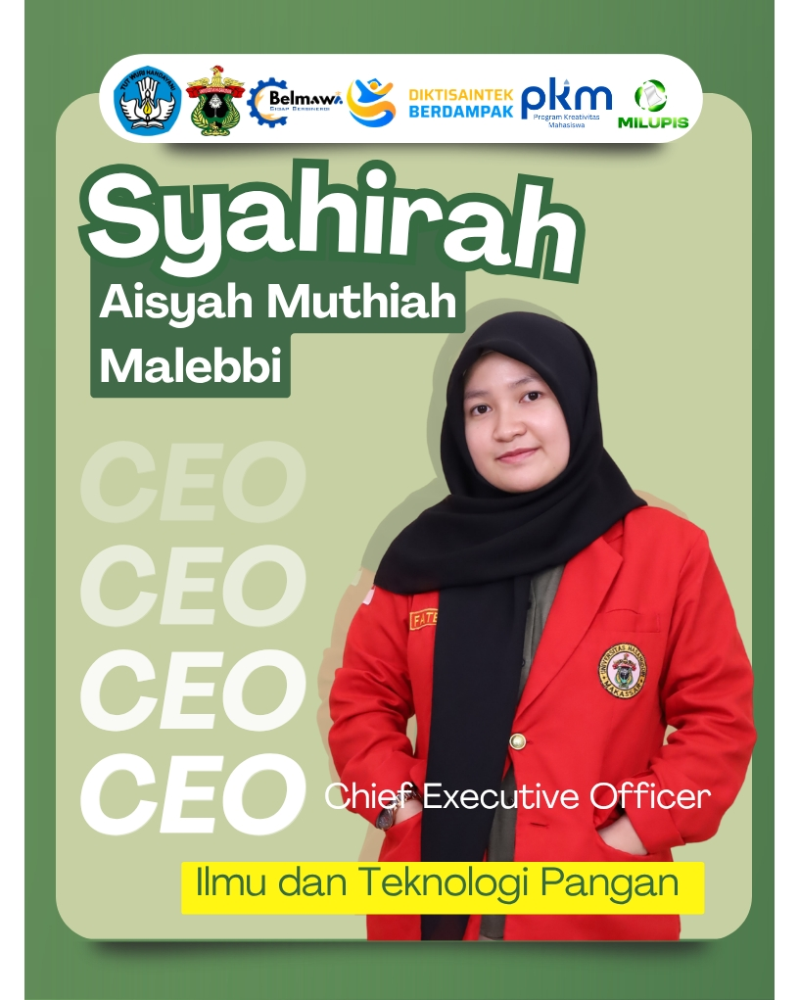
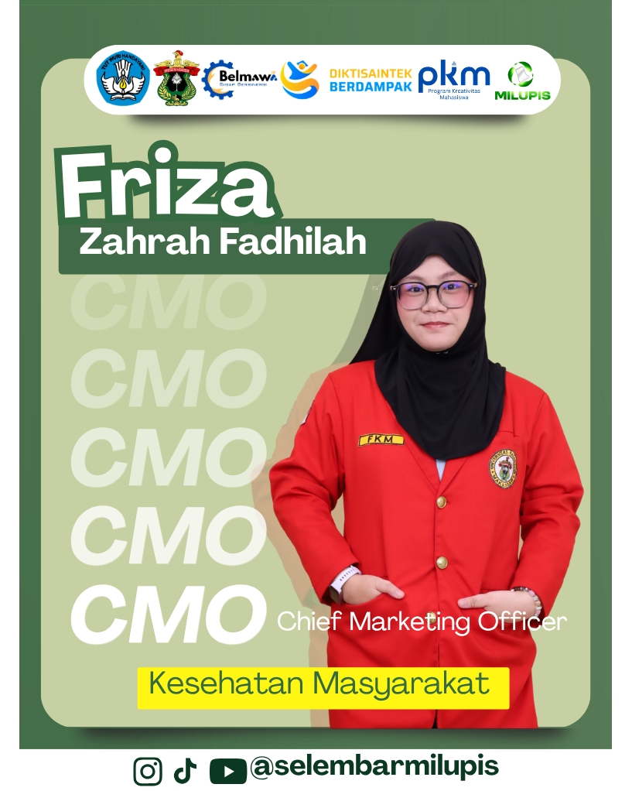
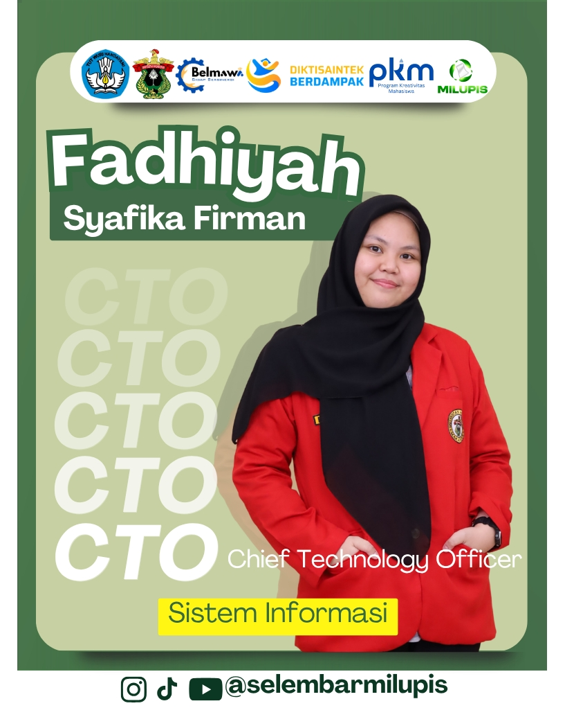

INOVASI LEMBARAN ORGANIK PENYERAP MINYAK
Gorengan nikmat, bumi tetap sehat.
Lembaran penyerap minyak organik berbasis serat selulosa batang pisang dan tongkol jagung.
Lebih kuat, food-grade, dan ramah lingkungan.
TIM PKM-K UNIVERSITAS HASANUDDIN
30
LEMBAR / BOX
0,5 mm
KETEBALAN
314
KEMASAN TERJUAL

100%
BAHAN ORGANIK
Food-grade
AMAN UNTUK MAKANAN
MENGAPA MILUPIS ?
Konsumsi gorengan di Indonesia meningkat dari 45% pada 2018 menjadi 51,6% pada 2023.
Sementara itu, minyak trans ditemukan pada 8,46% dari 130 makanan yang diuji.
BERAWAL DARI MASALAH NYATA
Lembaran biasa belum bekerja sebaik yang kita butuhkan.
Dari 143 responden, 94,6% menggunakan alas penyerap minyak konvensional, namun masih menemui berbagai kendala.
KECIL BENTUKNYA, BESAR MANFAATNYA
Lebih baik untuk makanan. Lebih baik untuk lingkungan.
Milupis dirancang untuk kebutuhan rumah tangga dan pelaku usaha kuliner yang menginginkan solusi praktis sekaligus bertanggung jawab.
Daya serap tinggi
Membantu meniriskan minyak dari gorengan dengan lebih efektif.
Kuat dan praktis
Tidak mudah sobek dan tidak menempel pada makanan.
Food-grade
Aman bersentuhan dengan makanan dan memiliki sifat antibakteri.
Organik & sirkular
Memanfaatkan batang pisang dan tongkol jagung yang bernilai guna.
DARI LIMBAH MENJADI MANFAAT
Tujuh langkah menuju lembaran organik.
Serat alami diproses secara terukur hingga siap menjadi lembaran peniris yang kuat dan aman digunakan.
Lihat poster riset ↗- 01Persiapan bahan
- 02Pencucian
- 03Pemutihan
- 04Pembuatan pulp
- 05Pencetakan
- 06Pengeringan
- 07Pengemasan
PILIHAN YANG UNGGUL
Dirancang melampaui penyerap konvensional.
Keunggulan fungsi yang lengkap dengan harga tetap terjangkau untuk penggunaan harian.
MULAI DARI
Rp30.000
/ box
| ASPEK | MILUPIS | TISU DAPUR | KERTAS MINYAK |
|---|---|---|---|
| Daya serap tinggi | ✓ | ✓ | — |
| Tidak mudah sobek | ✓ | — | ✓ |
| Food-grade & ramah lingkungan | ✓ | ✓ | ✓ |
| Kapasitas lembaran tinggi | ✓ | — | — |
| Tidak menempel pada makanan | ✓ | — | ✓ |
DARI MAKASSAR UNTUK INDONESIA
Telah dipercaya di 8 kota dan kabupaten.
314
kemasan terjual
8
kota & kabupaten
1,44
B/C ratio
"Membantu mengurangi minyak pada makanan, lembarannya kuat dan tidak mudah robek." — Ibu Salbiah, Pengguna Milupis
SAATNYA BERALIH
Tiriskan minyaknya, bukan kepeduliannya.
Pilih lembaran peniris yang praktis untuk dapur dan lebih bijak untuk bumi.
ORANG DI BALIK MILUPIS
Tim Pengembang
Lima mahasiswa dari berbagai program studi yang bekerja bersama menghadirkan Milupis.

CFOSyahwa Alifia Fatmawati. M
Chief Financial Officer
Akuntansi

COOIchsan Hasyim
Chief Operating Officer
Teknik Industri

CEOSyahirah Aisyah Muthiah Malebbi
Chief Executive Officer
Ilmu dan Teknologi Pangan

CMOFriza Zahrah Fadhilah
Chief Marketing Officer
Kesehatan Masyarakat

CTOFadhiyah Syafikah Firman
Chief Technology Officer
Sistem Informasi